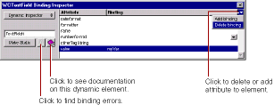

PATH
Documentation > WebObjects 4.5 >
Tools and Techniques
Deleting Bindings
To delete a binding:
-
Open the Inspector by clicking
 .
.
-
Click the row containing the binding you wish to delete.
-
Click the pull-down list in the top-right corner of the inspector and choose Delete binding. You can also press the Delete key (Backspace on Windows NT) to delete a binding.

In the WOTextField example above, if you delete the value
binding, the Inspector displays value
in red. Each element has a binding syntax that must be followed; otherwise, WebObjects won't launch your application. The Inspector displays required bindings that have not been set and illegal bindings in red.
© 1999 Apple Computer, Inc. – (Last Updated July 27 99)